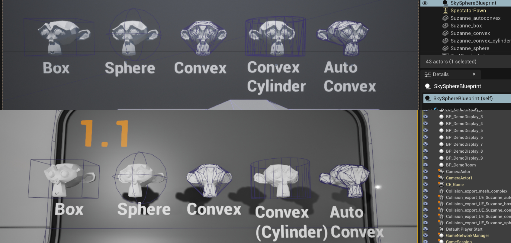
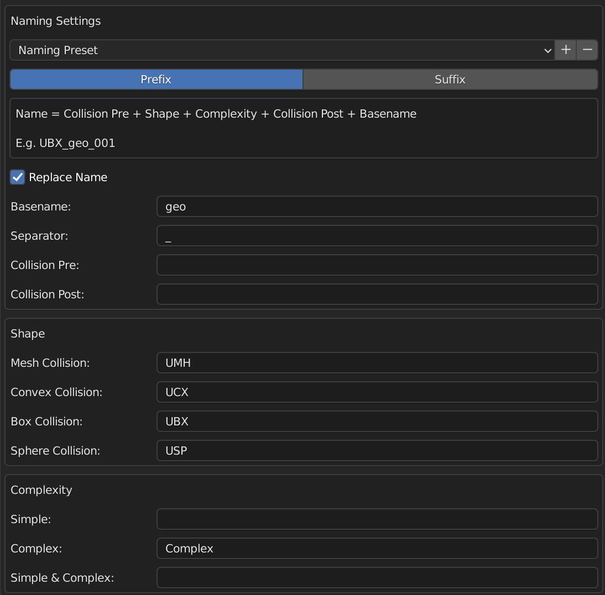
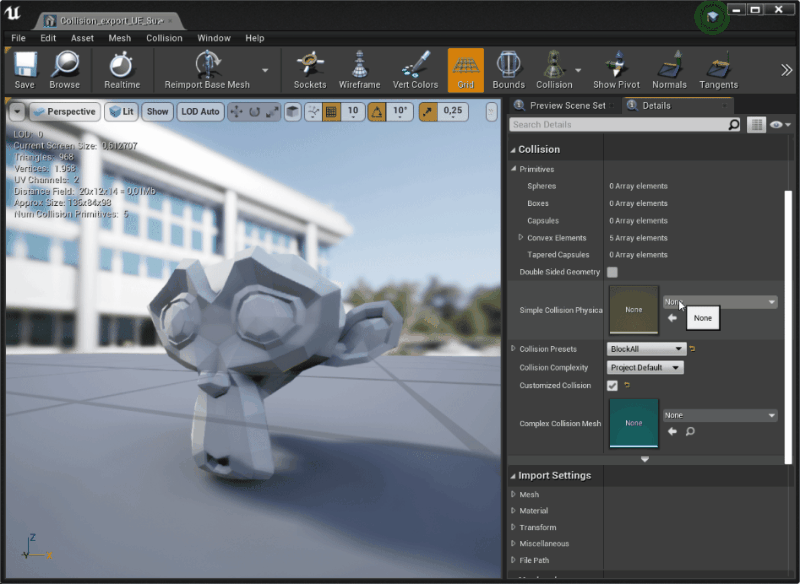
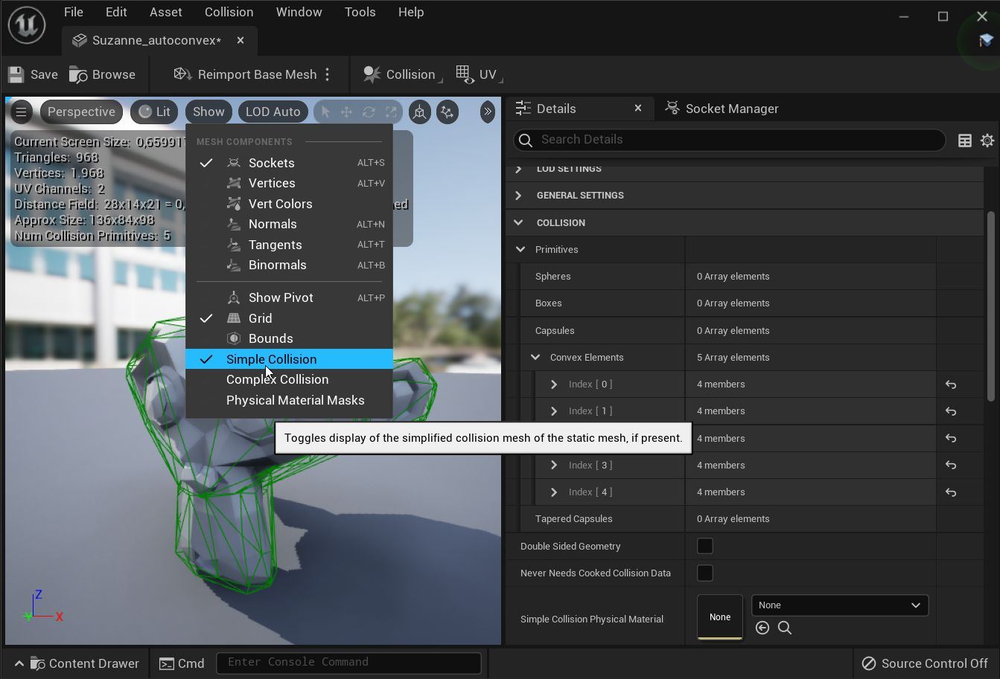
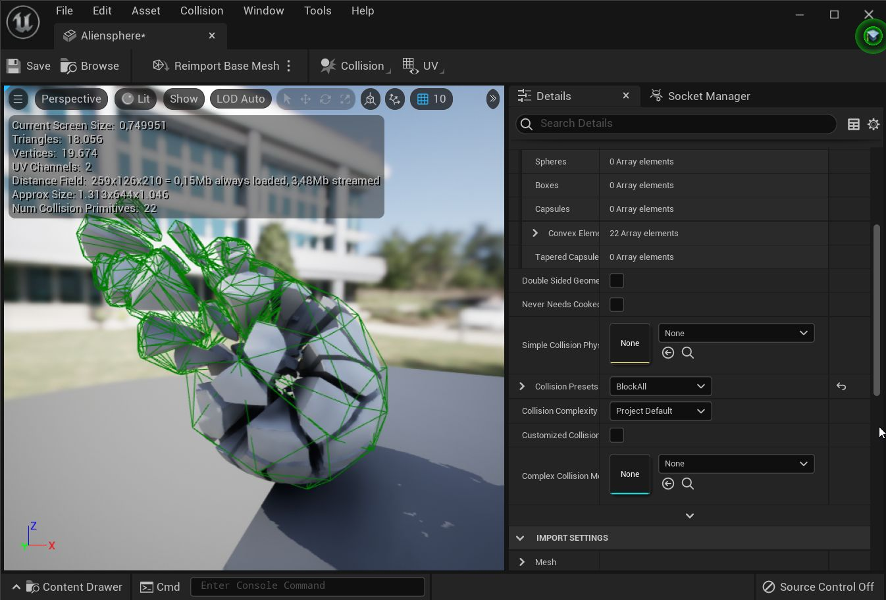
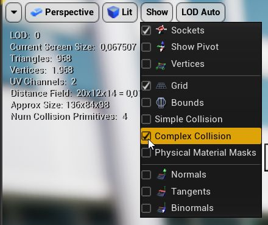
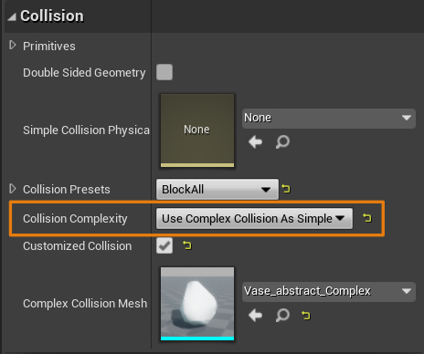
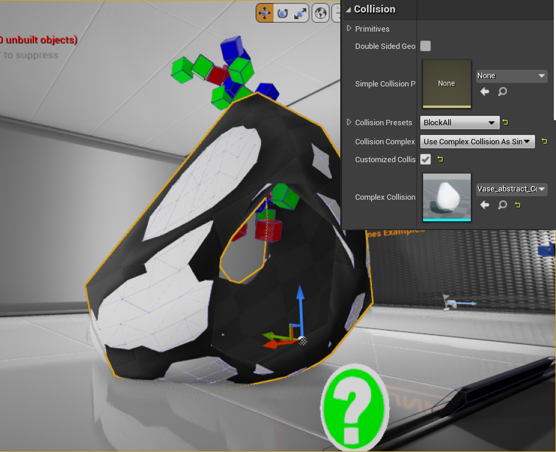
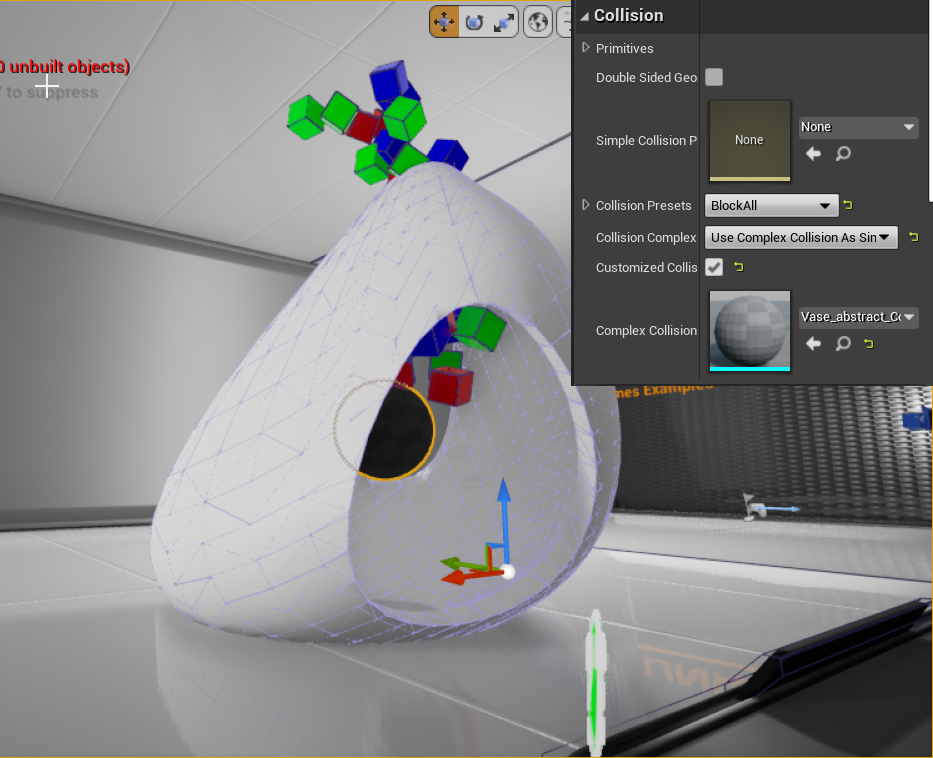

UE4 and UE5 support the import of Simple and partially Complex collisions.
 Supported Simple Collision shapes imported to UE4 and UE5.
Unreal Engine Overview
UE differentiates between 2 types of colliders: Simple and Complex Collisions. Simple Collisions will be the focus of this guide. Complex Collisions in UE use usually visual mesh geometry.
In Unreal Engine, you have access to simple and complex collision shapes. Simple Collisions are primitives like cubes, spheres, capsules, and convex hulls. Complex Collision is the trimesh of a given object. By default, Unreal Engine creates both simple and complex shapes, then, based on what the user wants (complex query versus simple query), the physics solver will use the corresponding shape for scene queries and collision tests.
UE4 Documentation: Simple versus Complex Collision
Simple collision can be detected automatically upon import. You must use the proper naming pattern for it to work! The required naming can be found in the following table from the UE4 Documentation: FBX Static Mesh Pipeline Collision
|
Mesh Prefix and Name |
Description |
|---|---|
|
UBX_[RenderMeshName]_## |
A Box must be created using a regular rectangular 3D object. You cannot move the vertices around or deform it in any way to make it something other than a rectangular prism, or else it will not work. |
|
UCP_[RenderMeshName]_## |
A Capsule must be a cylindrical object capped with hemispheres. It does not need to have many segments (8 is a good number) at all because it is converted into a true capsule for collision. Like boxes, you should not move the individual vertices around. |
|
USP_[RenderMeshName]_## |
A Sphere does not need to have many segments (8 is a good number) at all because it is converted into a true sphere for collision. Like boxes, you should not move the individual vertices around. |
|
UCX_[RenderMeshName]_## |
A Convex object can be any completely closed convex 3D shape. For example, a box can also be a convex object. The diagram below illustrates what is convex and what is not: |
Warning
Unreal Engine does not support mesh colliders for simple collisions. They are therefore missing from the list above. You can either split the shape in convex collisions (e.g., auto convex) or use Complex Collision as Simple Collision. Complex Collisions are not supported for dynamic objects.
Blender Overview
The following image illustrates the addon preferences to achieve the needed naming. This should be the addon's default settings.

You can see an example of how the naming could look at the top with the given settings. In this case: UBX_Suzanne_001, assuming the original mesh was named Suzanne.
Note
You can donwload the Unreal Engine Naming Preset from here: Download | View. You find more informations and instructions on how to install it here Game Engine Support
Setup Simple Collision
- Setup the naming in the Collider Addon preferences according to UE naming conventions.
- Export the Asset together with the correctly named colliders. There are no special export settings.
-
Import the asset to Unreal Engine. There are no special import settings related to colliders. UE detects the collider naming and converts them into the appropriate collider shape. (optional) Disable Auto Generate Collision. Auto Generate Collision will generate collisions for assets that don't use any custom colliders.

-
(optional) Assign Physics Material to the Simple Collision. You can set up the Physics collision for the simple collision shape from the Static Mesh Editor -> Collision -> Simple Collision Physical Material.

-
Double check the Simple Collision from either the Static Mesh Editor or place the Meshes in the scene. Alt + C

This workflow can be used with many collisions.

Setup Complex Collision
Complex Collisions must be exported as a separate individual asset. They will be assigned to the asset later on in UE. There is no automatic pipeline set up for it.
- Export the asset, that can have simple collisions, and the complex collisions as 2 different assets.
-
Import both the asset and the complex collision. You will have 2 assets in the UE asset browser.

-
Open the Static Mesh Editor for the asset. Assign the complex collision asset to the Complex Collision Mesh in the Collision Panel. You can activate the preview from the viewport Show -> *Complex Collision. The Complex Collision should appear in dark blue and replace the light blue wireframe of the original mesh.


Advanced
Mesh Collision: Use Complex Collision As Simple
It is indirectly possible to have Mesh Colliders by forcing the Simple Collision to Use the Complex Collision and replacing the Complex Collision as described before. The setting can be found in the Static Mesh Editor -> Collision -> Collision Complexity

Warning
There appears to be a bug, both in UE4 and UE5. The collision debugs views falsely draw the asset wireframe instead of the custom Complex Collision Mesh when using Complex Collision As Simple. The simulation however seems to be correct and uses the custom Complex Collision Mesh.
The example shows that even if the collisions are not updated in the debug view, the collision is taken into account. Not the visible mesh wireframe is used for the complex shape, as suggested from the debug view. Unfortunately, I choose a bad perspective to capture the gifs.


The following image shows how the shapes are expected to look. I did more tests than shown here:
 
Physics Materials for Complex Collisions:
Warning
Physics material for Complex Collisions are not part of the colliders but rather the standard materials of the asset. It does not make sense trying to support any specific features for it in a Blender addon.
More Info: